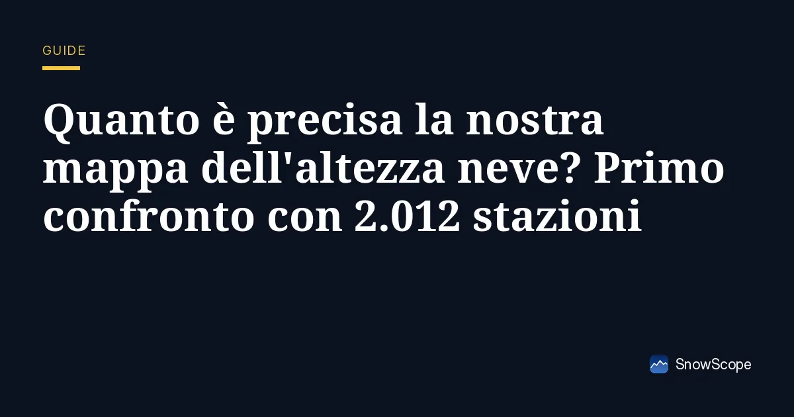

Quanto è precisa la nostra mappa dell'altezza neve? Primo confronto con 2.012 stazioni
Una mappa della neve serve solo se è giusta. Da ora controlliamo la nostra ogni giorno con le stazioni di misura delle Alpi, dei Pirenei e del Nord America, e pubblichiamo il risultato. Ecco il primo bilancio, del 9 novembre 2026.
Le previsioni neve in tempo reale per Alps nell'app SnowScopeAltezza neve, allerte powder e mappa 3D, gratis.
I numeri principali
Abbiamo confrontato la mappa con 2.012 stazioni che hanno trasmesso un'altezza neve (quel giorno sono state raccolte 2.516 stazioni di 16 reti). In media la mappa era più bassa di 0,5 cm, la RMSE (la dimensione tipica di un errore, con gli errori grandi che contano di più) era di 7,7 cm, e la mappa concordava con le stazioni su neve o niente neve (5 cm o più) l'88 % delle volte.
Inizio novembre è facile da un lato: molte stazioni non hanno ancora neve, e la mappa nemmeno. Nelle 780 stazioni dove la stazione o la mappa avevano neve, la RMSE era di 12,4 cm, lo scarto di -1,3 cm e l'errore tipico di 3,3 cm.
Regione per regione
Ovest degli USA, 1.063 stazioni (soprattutto SNOTEL): scarto 0,1 cm, RMSE 4,6 cm, neve o niente neve giusto l'89 % delle volte. Alpi, 917 stazioni: scarto -1,1 cm, RMSE 10,3 cm, 86 % di accordo. I Pirenei hanno per ora solo 14 stazioni che trasmettono, RMSE 3,0 cm.
Una sola stazione spiega buona parte del numero delle Alpi: un sito su ghiacciaio a 3.499 m ha misurato 320 cm mentre la nostra mappa mostra 28 cm. I ghiacciai conservano neve vecchia e ghiaccio che una mappa della neve stagionale non deve contare; segnaliamo questi siti invece di inseguirli.
Cosa non facciamo ancora bene
La neve sottile di inizio stagione. Dove una stazione misurava neve, la mappa ne mostrava solo il 61 % delle volte, e dove la mappa mostrava neve, il 23 % di quelle stazioni non ne aveva.
Le perturbazioni miti. Questa settimana abbiamo visto che SnowScope trasformava la pioggia in neve quando lo zero termico era alto. La neve fresca in 24 ore va già bene: RMSE 1,0 cm su 1.890 stazioni.
Leggere questi numeri con onestà
Le stazioni servono anche a costruire la mappa: questo bilancio mostra quanto la mappa finale si adatta alle misure, non è un test del tutto indipendente. Una stazione misura un punto, la mappa dà un'area, e la neve può cambiare molto in poche centinaia di metri (vento, bosco, sole).
Cosa viene dopo
Ora questo controllo gira due volte al giorno e teniamo lo storico, così vedrai i numeri muoversi durante la stagione. Presto: una mappa della neve più nitida a 100 m, più stazioni (Spagna e Norvegia), una regola migliore per la neve a chiazze di inizio stagione e un «intervallo probabile» attorno a ogni valore, per sapere quando la mappa è meno sicura.
Consigli per sciatori
- Usa la mappa per confrontare luoghi e quote; controlla il bollettino della località prima di partire.
- Attiva il livello «Neve misurata» per vedere le stazioni accanto alla mappa.
- A inizio stagione fidati dei pendii alti esposti a nord e aspettati poca neve più in basso.
Su questi numeri
Scarto = mappa meno stazione. RMSE = errore quadratico medio. Neve o niente neve: soglia di 5 cm.
Cita questo articolo
Per ricerca, didattica o stampa: numeri e grafici sono liberamente riutilizzabili con licenza CC BY 4.0 citando così.
SnowScope (2026), Quanto è precisa la nostra mappa dell'altezza neve? Primo confronto con 2.012 stazioni, https://snowscope.app/blog/it/2026/11/how-accurate-is-our-snow-depth-map-november-2026.html, consultato il 2026-11-09
SnowScope (Atlas Labs). (2026, November 9). Quanto è precisa la nostra mappa dell'altezza neve? Primo confronto con 2.012 stazioni. SnowScope snow reports. https://snowscope.app/blog/it/2026/11/how-accurate-is-our-snow-depth-map-november-2026.html
BibTeX
@misc{snowscope2026howaccurateisoursnowdept,
author = {{SnowScope (Atlas Labs)}},
title = {Quanto è precisa la nostra mappa dell'altezza neve? Primo confronto con 2.012 stazioni},
year = {2026},
month = nov,
howpublished = {\url{https://snowscope.app/blog/it/2026/11/how-accurate-is-our-snow-depth-map-november-2026.html}},
note = {Published 2026-11-09 19:55 UTC; accessed 2026-11-09}
}· CC BY 4.0 · Metodi, dati e strumenti →
Segui Alps
Gratis: un messaggio quando arriva la neve e il meteo ogni mattina.